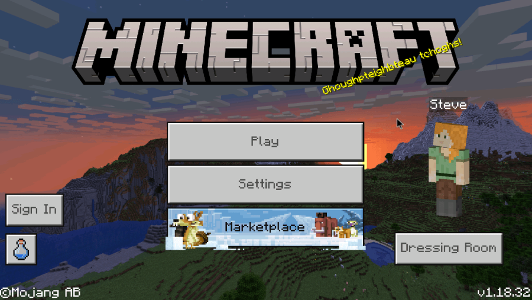
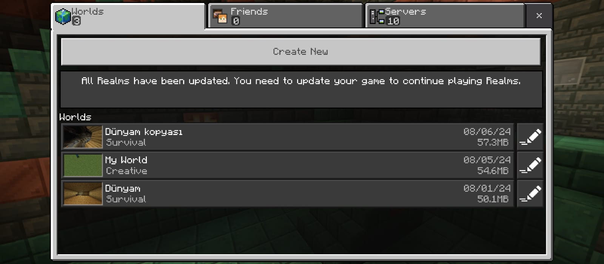
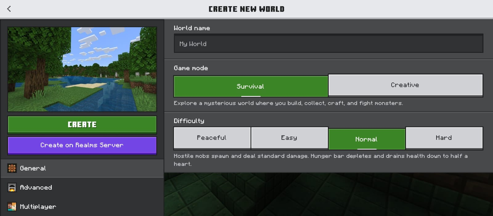
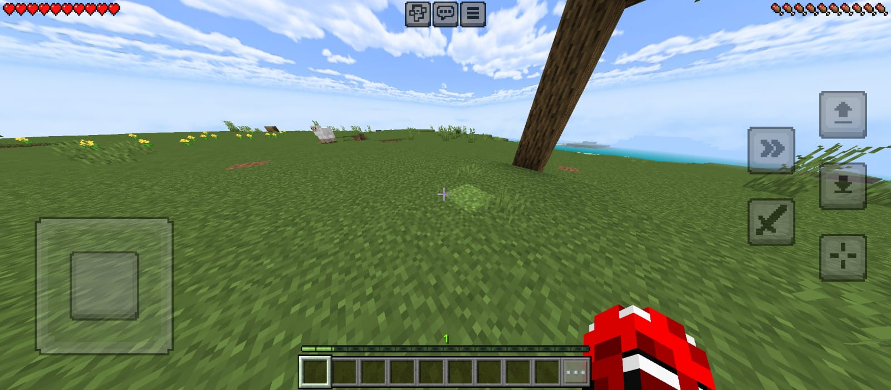
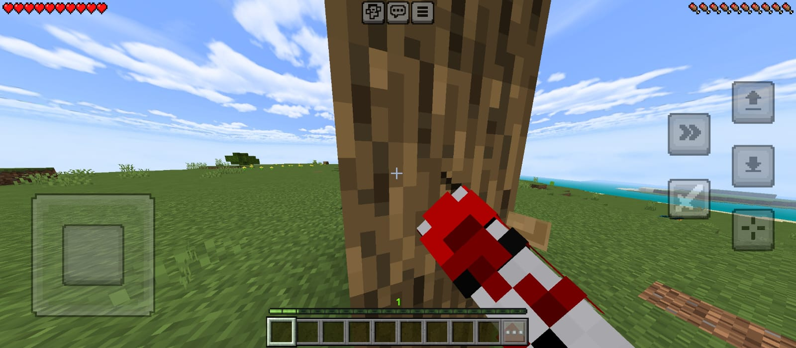
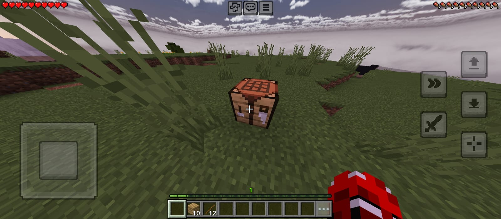
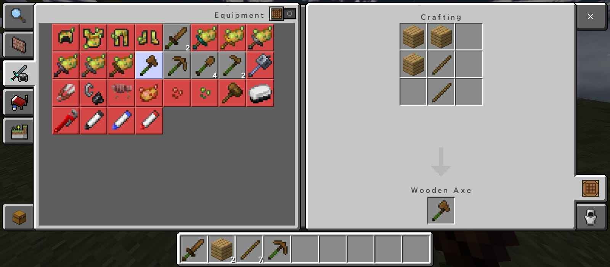
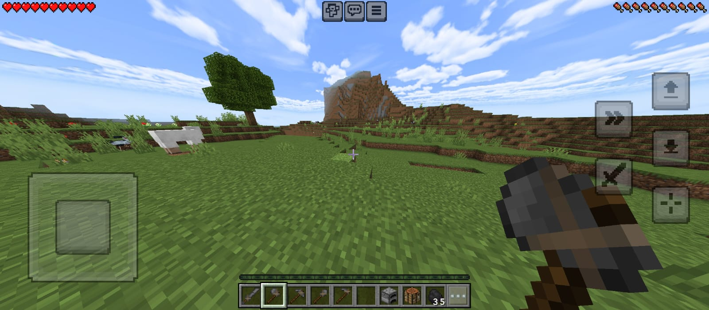
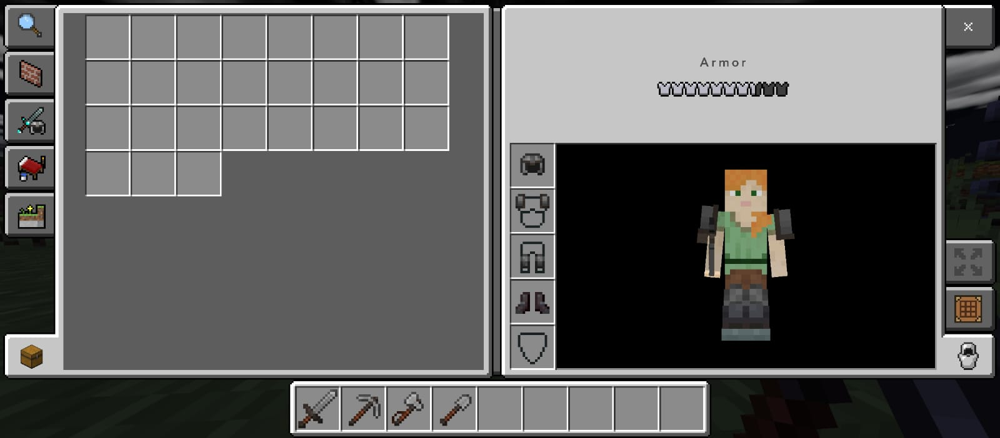

micekraft aç.sonra şahsi ayarlarını yaptıktan sonra ve hesap açtıktan sonra (isteğe bağlı) bir dünya oluştur.
Ayarları sen yaparsın daha sonra dünyayı oluştur micekraft tarihi
  
daha sonr adünya yükledikten sonra bir ağaca git ve onu kır
topladığın odunu çantanı açarak bir kıraftin tebol yap ve onu yere koy onu aç ve tuls yap
   
daha sonra güzelce bir madene in ve taş topla ve taştan fırın ve taş tulsları yap.
bir daha magraya in demir topla ve demir zırhları yap hemde tulslarıyla beraber.
(istersen kendine bir ev yapabilirsin)
 
demirden sonra altın altından sonra elmas
güzel bir elmas set yap daha sonra nezera git ve orda enderpel ve bileyz asası al aiofender yap
aiofender ile ende git ende gitikten sonra ecderhyı öl-d-ü-r ve oyun bititititittititit